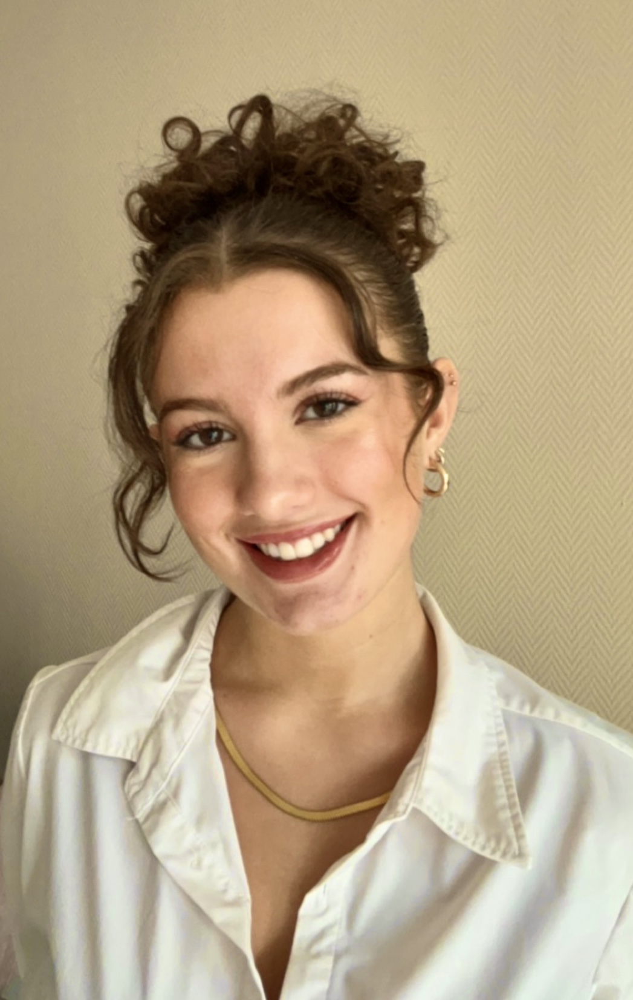

A starting Graphic Designer
Hallo, ik ben Amy, een gedreven en leergierige grafisch ontwerper met een passie voor creativiteit en een streven naar voortdurende groei. Mijn reis in de wereld van design heeft me niet alleen geleid naar grafisch ontwerp, maar ook naar webdesign en development. Ik ben nog steeds bezig met het verkennen en begrijpen van alle facetten van dit boeiende vakgebied, en ik zet me volledig in om mijn kennis en ervaring uit te breiden.

"Old ways won't open new doors"